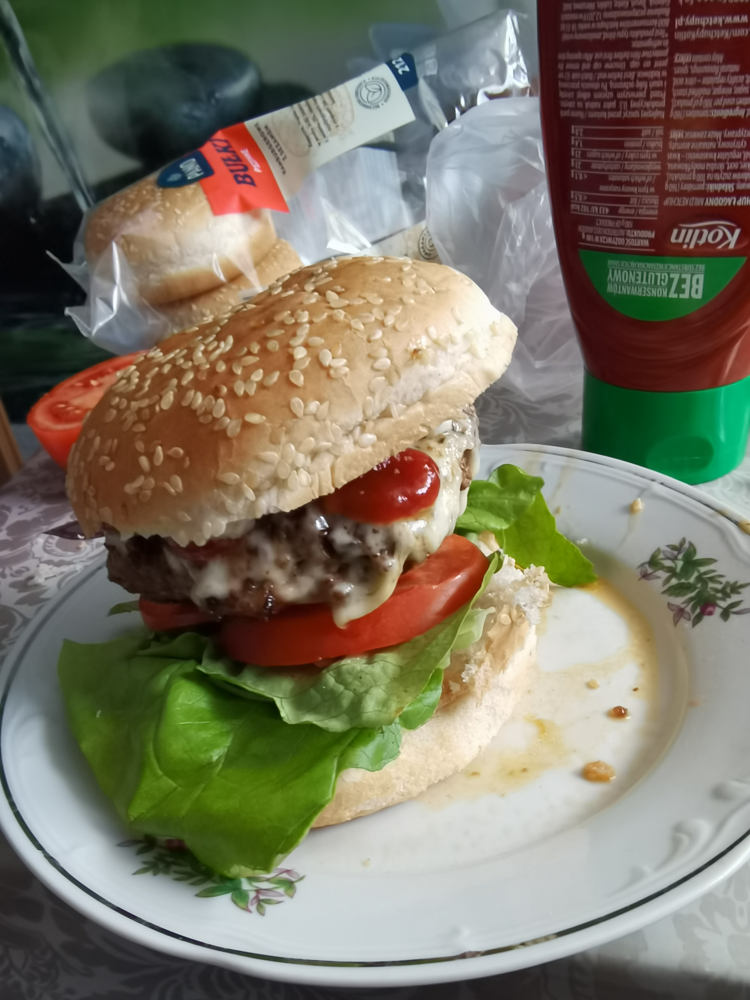

Burger

Description
There's nothing better than a juicy, homemade burger, and this recipe shows you how to make a perfect one
right on your stovetop. The patty is seasoned with smoky paprika and mustard for a deep, savory flavor,
then cooked to perfection and topped with melting Gouda cheese.
Assembled on a toasted bun with fresh veggies and your favorite sauce, this burger is a true classic that
will beat any takeout, any day.
Ingredients
- 500g ground beef (preferably 80/20 fat content)
- 1 medium onion, finely chopped
- 1 large egg
- 1 teaspoon smoked paprika
- 1 tablespoon Dijon mustard
- Salt and black pepper, to taste
- 4 slices of Gouda cheese
- 4 burger buns
For assembling:
- Lettuce leaves
- Slices of a large tomato
- Ketchup, mayonnaise, or your favorite burger sauce
- (Optional: sliced red onion, pickles)
Steps
- First, prepare the onion. Heat a little oil in a skillet over medium heat and cook the finely chopped
onion for about 5 minutes until soft and translucent. Remove from heat and let it cool down for a few minutes.
- In a large bowl, combine the ground beef, the cooled onion, the egg, smoked paprika, and mustard.
Season generously with salt and pepper. Gently mix with your hands until all the ingredients are just combined—be careful not to overmix.
- Divide the meat mixture into 4 equal portions. Shape each portion into a patty that is slightly wider
than your burger buns, as they will shrink while cooking.
- Heat the same skillet over medium-high heat. Cook the patties for 4-5 minutes on each side for a
medium-well burger, or until cooked to your liking.
- During the last minute of cooking, place a slice of Gouda cheese on top of each patty.
You can cover the pan with a lid to help the cheese melt perfectly.
- While the patties are finishing, toast the cut sides of the burger buns in the pan or in a toaster until
golden and slightly crispy.
- Assemble your burgers: spread your chosen sauce on the toasted buns, then add the cheesy patty, lettuce,
tomato slices, and any other toppings you desire. Serve immediately.
Homepage